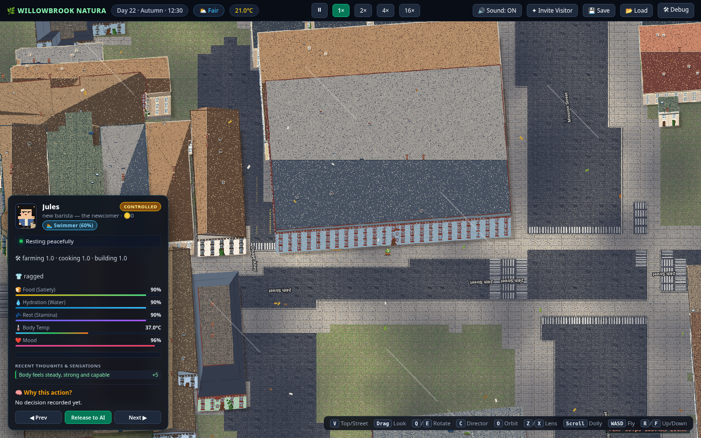
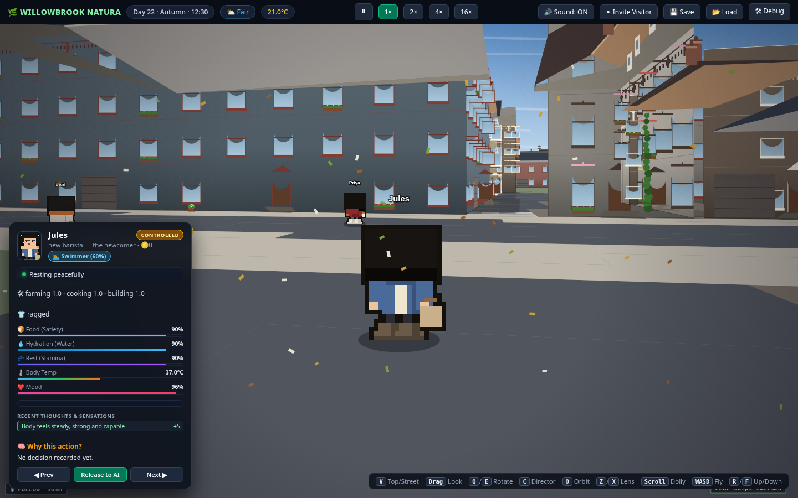
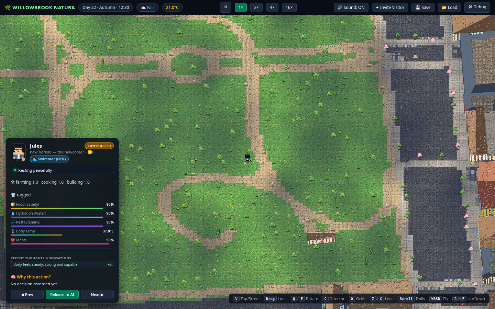
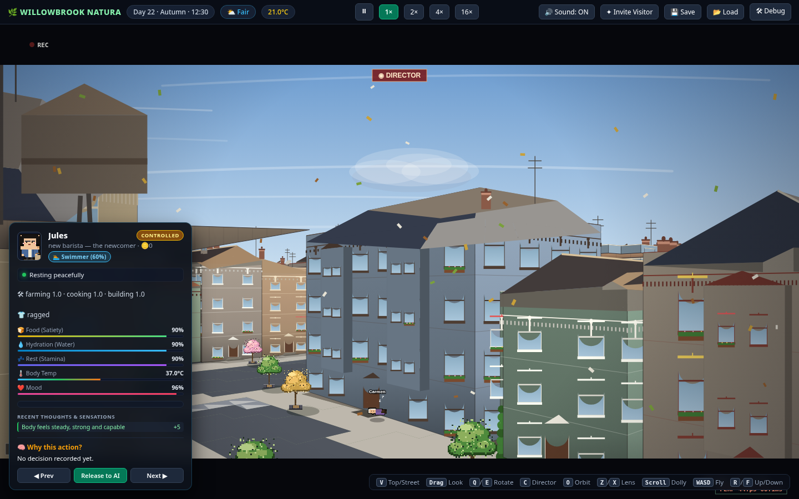

Press kit
Real World
A persistent AI neighborhood on a real Mission District block — free to watch, paid to reach into. First neighborhood: The Mission.
This page is a pre-launch draft. A downloadable kit (zip of logo, key art, screenshots) will ship at launch — asset slots are marked below.
Fact sheet
| Item | Detail |
|---|---|
| Title | Real World — first neighborhood: "The Mission" |
| Genre | Persistent life simulation / spectator sim |
| Platform | Web browser (desktop-first) |
| Status | In active development — no public build yet |
| Price model | Free to watch; optional paid requests, character slots, and subscription via non-transferable credits |
| Setting | Real street geometry of SF's Mission District around Dolores Park; all residents and addresses fictional |
| Cast | 8 main characters with full AI minds (unpossessable by anyone) + 20 ambient neighbors |
| Core mechanics | Time-boxed paid requests (exclusive/compatible/queued), public request feed, tenant→owner→landlord progression |
| Not included | No voice acting, no loot boxes, no cash-out/RMT, no crypto |
| Developer | [STUDIO NAME — placeholder] |
| Release date | TBD |
| Contact | [press@ — placeholder, set at launch] |
| Website | [domain — placeholder] |
Boilerplate
Short (50 words)
Real World is a persistent life sim set on a real Mission District block, where 28 fictional residents live 24/7 on AI. Watching is free. Players pay only for agency — time-boxed requests and characters of their own — while the eight main characters can never be possessed by anyone.
Long (150 words)
Real World is a browser-based "Truman Show": a persistent life simulation set on real streets around Dolores Park in San Francisco's Mission District. Twenty-eight fictional residents — eight main characters with full AI minds and twenty ambient neighbors — live, work, feud, and make up around the clock, whether anyone is watching or not. Watching is free, always. Players who want to reach in buy agency, not access: a request declares an action and duration upfront, prices it in credits, caps it hard, and posts it to a public feed everyone can read. The eight mains can never be possessed — by players or by the game's own owner — and every secret stays theirs to leak. Players who move in rent, work, and climb the neighborhood's oldest ladder: tenant, owner, landlord.
Assets
Logo and key art are pending the brand-identity pass — slots below reference the future files. Screenshots below are real captures from the current development build and may be used with attribution and the "in development" label intact.
assets/logo-primary.svg(slot — pending brand pass)
assets/logo-icon.svg(slot — pending brand pass)
assets/keyart-16x9.png(slot — pending key art)
Screenshots (development build)




Video
Teaser clips will be cut from the public feed + director camera.
Angles worth covering
The possession ban
Eight AI characters nobody — including the developer — can control. The audience trusts the world precisely because they can't break it.
A real block
Real Mission streets and Dolores Park as the stage; every resident and address fictional. A neighborhood you could walk to.
Agency by the minute
Time-boxed requests with hard caps and a public feed — a different answer to "how do you monetize a world" than loot boxes or subscriptions alone.
Contact
Press: [press@ — placeholder, set at launch]
General: [hello@ — placeholder]
Social: [handles — placeholder, no accounts registered yet]
No public contact channels exist yet — this is a pre-launch draft. When accounts are registered (with owner approval) this section will carry real addresses.